Qui era realment Jesús?
No es deia Jesús, va néixer uns anys «abans de Crist» i cap text antic no descriu la seva cara. Què en sap de debò la història, com l'ha pintat cada cultura del món i com el veuen les altres religions.
L'any 1940, en un estudi de Chicago, un il·lustrador publicitari anomenat Warner Sallman va acabar un retrat a l'oli: un home blanc, il·luminat des de dalt com una estrella de cinema, amb els cabells ondulats castany clar i la barba polida. Durant la Segona Guerra Mundial, la YMCA i l'Exèrcit de Salvació en van repartir còpies de butxaca entre els soldats nord-americans, i al cap de poques dècades aquell quadre, Head of Christ, s'havia imprès més de 500 milions de vegades.1,2
Cap text antic no descriu Jesús així. Ni tan sols els evangelis no diuen com era la seva cara. El que sí que podem reconstruir —amb arqueologia, textos antics i molta paciència— és un home molt diferent: un jueu de Galilea que parlava arameu, que no es deia Jesús i que no va néixer l'any 1. I també podem seguir com cada cultura del món, des de Síria fins al Japó, el Congo o els Andes, li ha posat una cara pròpia.
No es deia Jesús
Ningú no el va anomenar mai «Jesús» en vida. A Natzaret el cridaven Yēšūaʿ (pronunciat Ieixúa), la forma curta de l'hebreu Yehōšūaʿ, que és el nom de Josuè. Jesús i Josuè són, de fet, el mateix nom: la traducció grega de la Bíblia hebrea ja escrivia Josuè Iēsoûs.3 Era un nom corrent, i per això els evangelis hi afegeixen el poble: Jesús «de Natzaret».4
Tampoc no es deia Crist de cognom. Christós és la paraula grega per a l'hebreu mašīaḥ, «ungit»: el Messies, un títol. Per a un romà, el títol devia ser estrany: cap a l'any 120, l'historiador Suetoni parla d'un tal Chrestus, probablement confonent el títol amb chrēstós, un adjectiu grec que volia dir «útil, bo» i que sonava gairebé igual.3,5
Parlava arameu, la llengua del carrer a la Galilea del segle I; l'hebreu era sobretot la llengua de la religió.6 Els evangelis estan escrits en grec, però l'evangeli de Marc conserva algunes paraules seves sense traduir, com si l'autor no s'hagués atrevit a tocar-les. A una noia que tothom donava per morta li diu «Talità, cum», «noia, aixeca't» (Mc 5,41). A un sord, «Efatà», «obre't» (Mc 7,34). A Déu l'anomena «Abbà», «pare» (Mc 14,36). I a la creu crida «Eloí, Eloí, lemà sabactani?», «Déu meu, Déu meu, per què m'has abandonat?» (Mc 15,34). Fins i tot va posar sobrenoms: als germans Jaume i Joan els deia Boanerges, «fills del tro» (Mc 3,17).7 Són, probablement, el més a prop que podem estar de la seva veu.
Va néixer uns anys «abans de Crist»
L'any 525, a Roma, un monjo anomenat Dionís l'Exigu preparava unes taules per calcular quin dia queia Pasqua els anys següents. Les taules d'Alexandria que continuava comptaven els anys des de l'ascens de l'emperador Dioclecià, un perseguidor de cristians. Dionís va preferir comptar-los des de l'Encarnació de Jesús. La idea va triomfar —sobretot quan el monjo anglès Beda la va fer servir a les seves històries del segle VIII—, però el càlcul era equivocat.8
Segons l'evangeli de Mateu, Jesús va néixer quan regnava Herodes el Gran. I Herodes va morir el març o l'abril del 4 aC: l'historiador jueu Flavi Josep explica que just abans hi va haver un eclipsi de lluna, una pista astronòmica que ajuda a datar-ho. Per tant, Jesús va néixer cap al 6–4 aC. Dit d'una altra manera: Jesús va néixer uns quants anys «abans de Crist».3,9 I entre l'1 aC i l'1 dC no hi ha any zero: el calendari salta directament d'un a l'altre.
El 25 de desembre tampoc no surt a la Bíblia: cap evangeli no diu ni el dia ni l'estació. La primera vegada que apareix com a festa és en un almanac de luxe fet a Roma l'any 354, el Cronògraf de 354, que en una llista de festes diu: «VIII kal. Ian. natus Christus in Betleem Iudeae», «el 25 de desembre va néixer Crist a Betlem de Judea». Al mateix volum, el calendari civil marca aquell dia com N·INVICTI, el naixement de l'Invicte, que s'entén com el Sol Invicte, celebrat amb trenta curses de carros.11
Per què es va triar aquest dia encara es discuteix. Una teoria diu que els cristians van ocupar la festa del Sol. Una altra, que ho van calcular: si Jesús havia estat concebut el 25 de març, el mateix dia que creien que havia mort, havia de néixer nou mesos després. Fora de Roma, a més, la data no es va imposar mai del tot: l'Església armènia celebra Nadal el 6 de gener, i les esglésies ortodoxes que segueixen el calendari julià ho fan el 25 de desembre julià, que avui cau el 7 de gener.11
A Catalunya, el compte dels anys «des de l'Encarnació» va trigar a arribar. Fins al 1180, els documents catalans es dataven sobretot pels anys de regnat dels reis francs; aquell any, un concili a Tarragona va manar datar-los per l'any de l'Encarnació, i el canvi es va anar imposant. Castella, en canvi, va comptar amb l'«era hispànica», que començava el 38 aC, fins al 1383.12
El que sabem del cert, i les pedres que ho confirmen
Gairebé tots els historiadors, creients o no, accepten que Jesús va existir. I dos fets de la seva vida gairebé ningú no els discuteix: que el va batejar Joan Baptista i que el van crucificar sota el governador romà Ponç Pilat.13,14 A més dels textos cristians, el mencionen autors que no ho eren: l'historiador jueu Flavi Josep cap a l'any 93, que parla de «Jaume, el germà de Jesús anomenat Crist», i el romà Tàcit cap al 116, que diu que «Crist» va ser executat «sota Tiberi pel procurador Ponç Pilat».15 Com es van escriure els evangelis ho expliquem a Jesús i els quatre evangelis.
De Jesús no se n'ha trobat cap objecte. Però l'arqueologia ha anat traient de terra, peça a peça, el decorat i alguns dels personatges de la seva història.
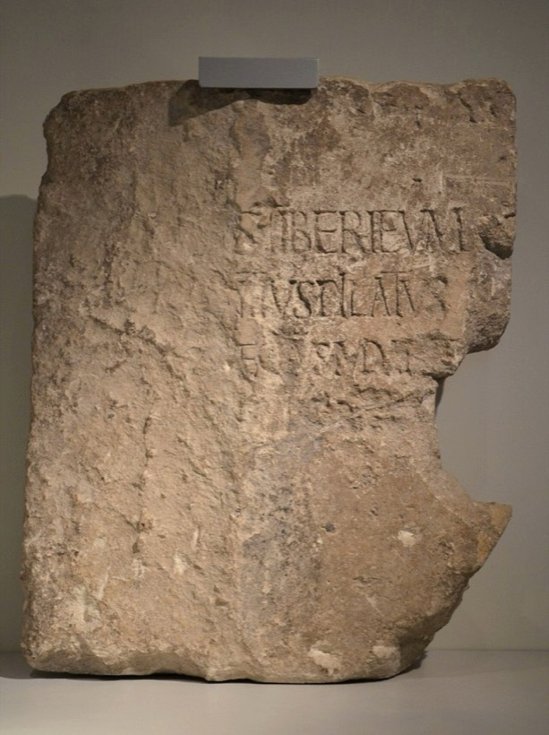
.jpg){kind=link}
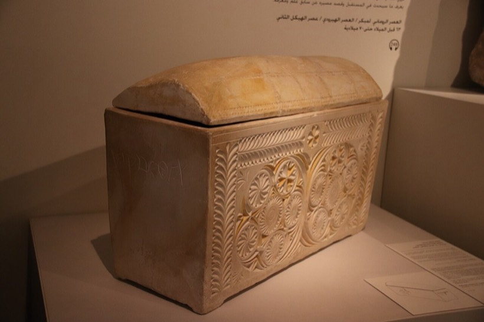
.jpg){kind=link}
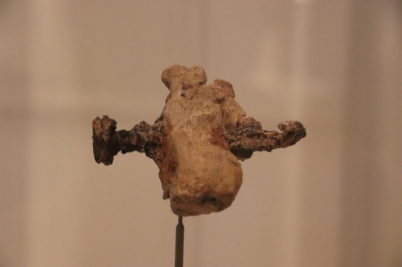
.jpg){kind=link}
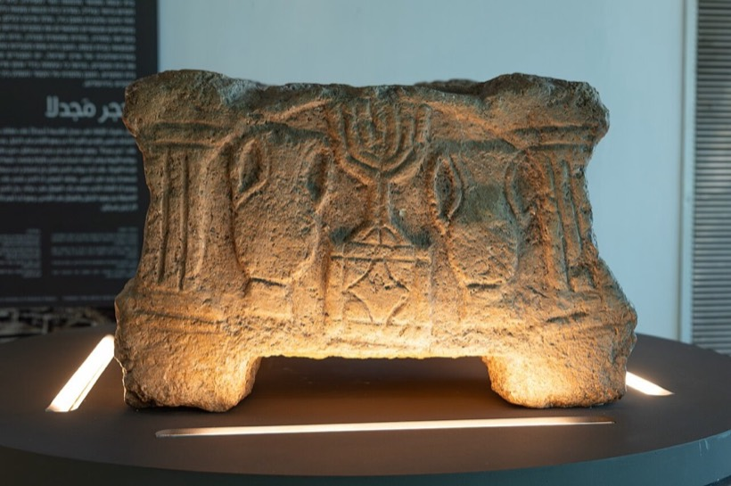

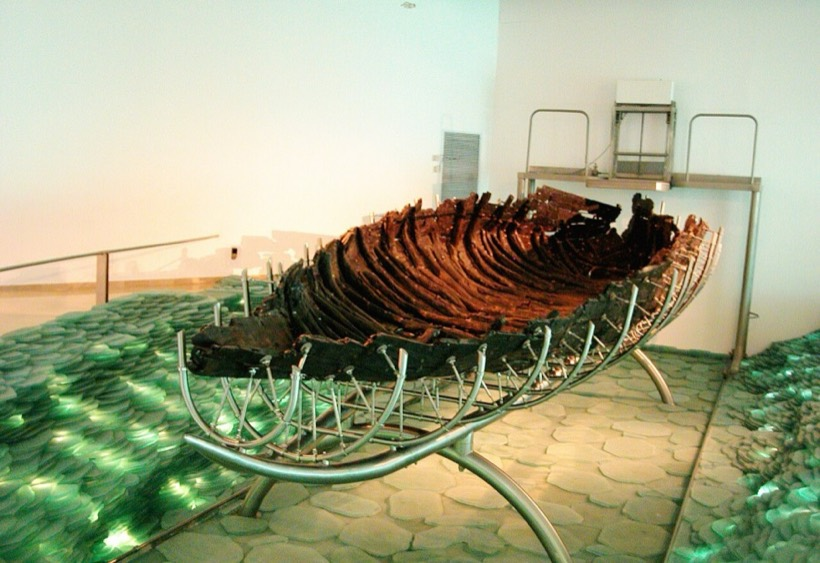

Tàcit, que escriu més de vuitanta anys després, anomena Pilat procurator, el títol dels governadors del seu temps. La pedra de Cesarea, gravada mentre Pilat governava, diu praefectus: és Tàcit qui fa servir un títol anacrònic.16
Al costat d'aquestes troballes n'hi ha que no resisteixen la prova o que continuen en dubte. La Síndone de Torí, el llençol amb la imatge d'un home crucificat, es va datar amb carboni 14 el 1988 en tres laboratoris independents: el lli és d'entre el 1260 i el 1390 (amb un 95 % de confiança).17 I l'«ossari de Jaume», una caixa d'ossos autèntica amb la inscripció «Jaume, fill de Josep, germà de Jesús», va portar a un judici per falsificació que va acabar el 2012: l'acusat va ser absolt d'aquest càrrec per manca de proves, però l'autenticitat de la inscripció continua en dubte.16
Un artesà d'un poble de pedra
Natzaret era un llogaret de pagesos sense muralles ni edificis públics, que ni l'Antic Testament ni Flavi Josep no esmenten mai. Segons les estimacions arqueològiques hi vivien entre uns 200 i 1.000 habitants, en cases de pedra amb pati i cisternes tallades a la roca. Al convent de les Germanes de Natzaret i al costat de la basílica de l'Anunciació s'han excavat cases del segle I, amb fragments de recipients de pedra calcària, els que feien servir els jueus per mantenir la puresa ritual.18,19 A una hora llarga a peu hi havia Sèforis, la capital que Herodes Antipes reconstruïa a l'estil grecoromà.
L'evangeli de Marc diu que els veïns l'anomenaven téktōn, una paraula que traduïm per «fuster» però que designava un artesà que treballava la fusta, la pedra i la construcció: un ofici manual i modest.14 En aquell món gairebé ningú no sabia llegir —a la Palestina romana, potser un 3 % de la població— i Jesús no va deixar ni una sola línia escrita.20
Com era? El que diuen els ossos
Cap dels quatre evangelis no descriu la seva cara, l'alçada, els cabells ni el color de la pell. L'única pista física és indirecta: quan van a detenir-lo, Judes ha de fer-li un petó perquè els guàrdies sàpiguen qui és (Mc 14,44). Probablement no destacava enmig del seu grup.21
Per saber com era un home com ell, la historiadora Joan E. Taylor (King's College London) va reunir el 2018 esquelets, tèxtils i textos de l'època. Un home jueu de Judea feia de mitjana uns 1,66 metres.21,22 L'únic crucificat del segle I trobat a Jerusalem, un jove anomenat Yehohanan amb el clau encara travessant-li el taló, feia 1,67.16,22 I a Jericó, un home d'1,88 duia a l'ossari el sobrenom de «Goliat», probablement per la seva alçada.22
El més probable és que tingués la pell bruna, els ulls foscos i els cabells foscos, com la gent de l'Orient Mitjà d'aleshores —sense projectar-hi les categories racials modernes, que no existien.21 Probablement duia els cabells curts: Pau, que escriu uns vint anys després de la seva mort, diu que per a un home «els cabells llargs són un deshonor».21 I vestia com un treballador: una túnica curta de llana, un mantell i sandàlies de cuir. Al mantell, a més, duia els tzitzit, els serrells rituals que la Torà mana cosir a les quatre puntes de la roba. Marc diu que els malalts li demanaven «tocar ni que fos la borla del seu mantell» (Mc 6,56), i la paraula grega que fa servir, kráspedon, és la mateixa que la Bíblia grega usa per als tzitzit.21
Mil cares per a un home sense retrat
Durant gairebé dos segles, ningú no el va pintar, o almenys no se n'ha conservat res. La imatge més antiga que podria tenir relació amb ell és una burla: un grafit gratat cap a l'any 200 en una paret del Palatí, a Roma, que mostra un home crucificat amb cap d'ase i un noi que l'adora, amb una frase en grec: «Alexàmenos venera [el seu] déu».23,24 Les primeres pintures cristianes, al segle III, el mostren jove i sense barba. A partir d'aquí, cada època i cada lloc li va posar la cara que tenia més a prop.
Baixa per recórrer, al mapa i a la línia del temps, 29 obres reals, des de Síria i les catacumbes de Roma fins a Taüll, el Congo, Mèxic, l'Índia, el Japó i Chicago.
Un jove sense barba. La pintura narrativa més antiga de Jesús no és a Europa, sinó a Dura-Europos (Síria, c. 232): un noi imberbe, de cabells curts i túnica curta. Igual a les catacumbes de Roma, al mosaic britànic de Hinton St Mary i al sarcòfag de Juni Bas (359). Els pintors li donen la cara jove d'Apol·lo o d'Hermes, la manera grecoromana de pintar un déu benèfic.24
L'emperador del cel. Quan el cristianisme esdevé la religió de l'Imperi, Jesús agafa la barba de Zeus i el tron de l'emperador. A Sant'Apollinare Nuovo (Ravenna, c. 500–526) conviuen tots dos models a la mateixa nau: jove als miracles, barbut a la Passió. El Pantocràtor («totpoderós») del Sinaí i la primera moneda amb la seva cara, de Justinià II (692–695), fixen el model bizantí.24
De Taüll a la Xina. A Dunhuang (Xina), una seda cristiana del segle IX vesteix una figura com un bodhisattva budista. A Catalunya, el Pantocràtor de Taüll (1123) hereta el poder bizantí, i a Etiòpia els evangelis il·lustrats li donen trets locals. Mentrestant, a Europa circula la Carta de Lèntul, una falsificació medieval que es fa passar per la descripció d'un funcionari romà: cabells color avellana amb ratlla al mig i barba partida.21,24
Europa el fa europeu, i el món el fa seu. Leonardo el pinta amb la pell clara del Renaixement, i Dürer s'hi arriba a retratar ell mateix. Però quan els europeus arriben a altres continents, els artistes locals el tornen a traduir: a Mèxic el fan amb plomes (1539), al Congo el fonen en llautó amb trets africans, a l'Índia mogol el pinten per a un príncep (1602–1604) i a Cusco, al Sant Sopar, li posen un conill d'índies a taula. Al Japó, en canvi, la seva imatge serveix per perseguir: tothom ha de trepitjar-la. I a Amsterdam, Rembrandt pinta un Crist a partir d'un model jueu del seu barri.24,25
El Jesús «ari» i el Jesús de Chicago. Al segle XIX, alguns autors europeus comencen a negar que Jesús fos jueu. El 1939, a Eisenach, teòlegs protestants nazis funden un institut per «desjudaïtzar» la Bíblia i fabricar un Jesús ari.26 L'any següent, a Chicago, Warner Sallman pinta el retrat que es reproduirà 500 milions de vegades, hereu del Jesús dolç de l'alemany Heinrich Hofmann (1889).1,2
Pantalla, Corea i el retorn a Judea. El cinema i la televisió donen carn al Jesús de Sallman: a la sèrie Jesus of Nazareth (1977), segons es conta, Franco Zeffirelli va demanar a Robert Powell que no parpellegés. Alhora, el coreà Kim Ki-chang el vesteix amb hanbok (1952–1953), i el 2001 una reconstrucció forense de la BBC, feta a partir de cranis jueus del segle I, torna a posar-li pell bruna i cabells curts.2,21,24,27
Dades reals. Passa el cursor o toca qualsevol punt. Fonts i dades del gràfic →
En menys de tres segles, el noi sense barba de Síria es converteix en un sobirà barbut i frontal.
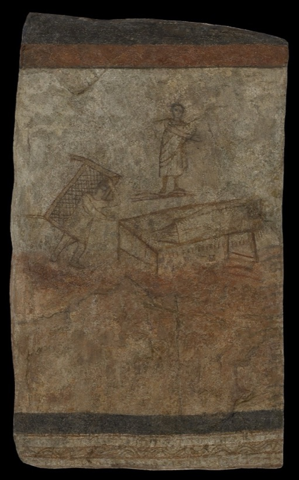


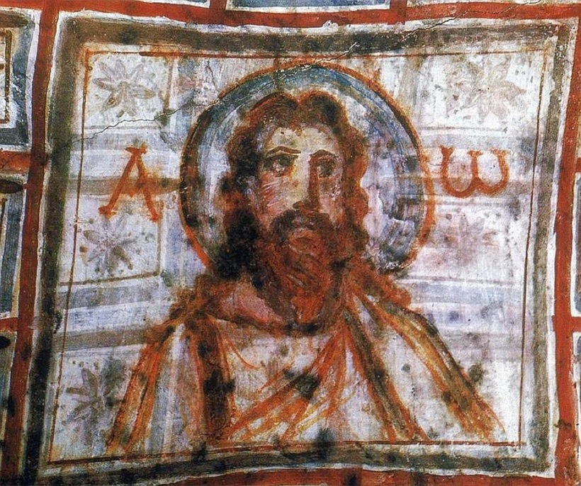


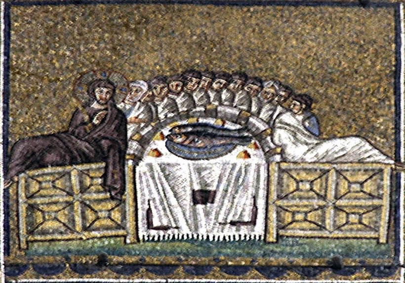
.jpg){kind=link}
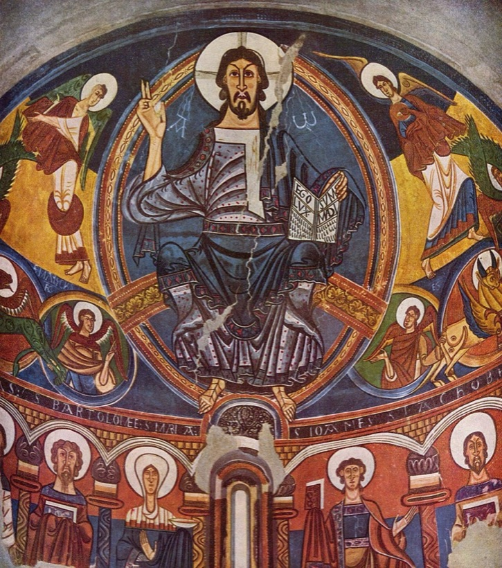


.jpg){kind=link}
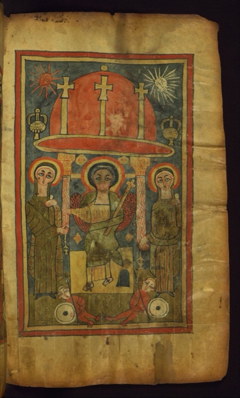

Nota d'arxiu: els Evangelis de Zir Ganela (1400–1401) citats al mapa pertanyen a la Morgan Library (reproducció digital subjecta a permís del museu, consultable aquí); en el seu lloc mostrem aquest evangeliari etíop coetani en domini públic del Walters Art Museum.
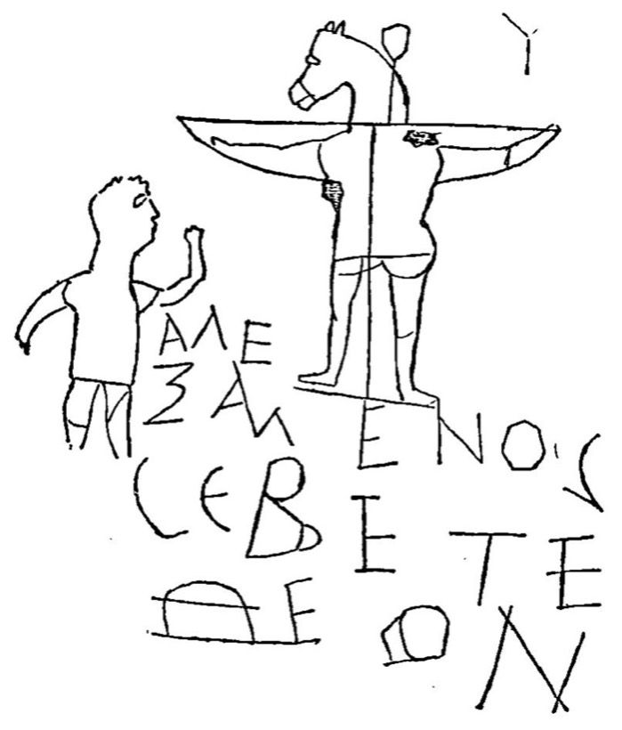

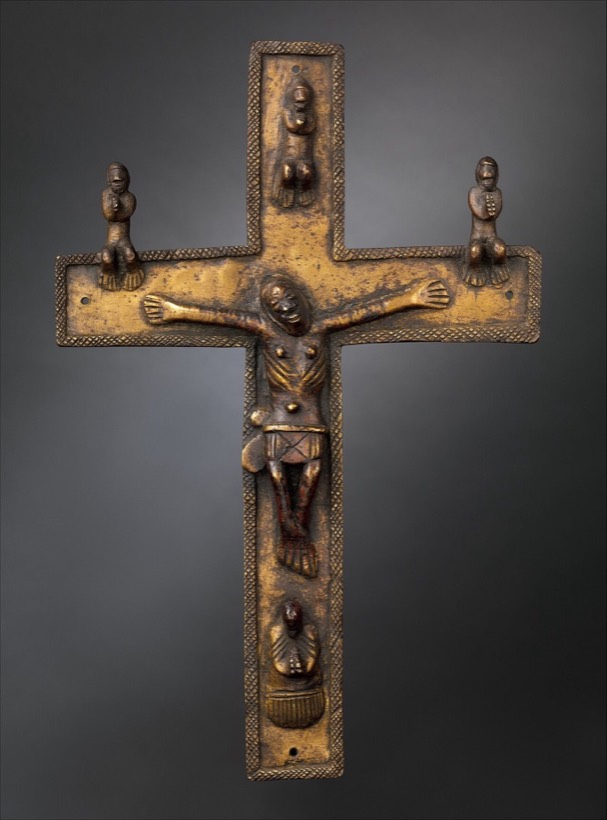

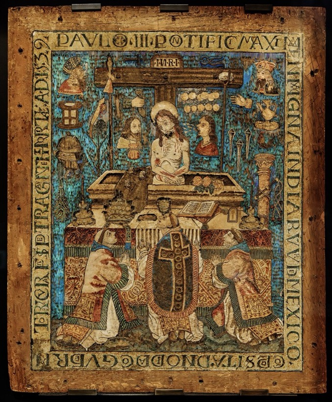
_Messe_de_saint_Gr%C3%A9goire_-_Mus%C3%A9e_des_Am%C3%A9riques_%E2%80%93_Auch.jpg){kind=link}
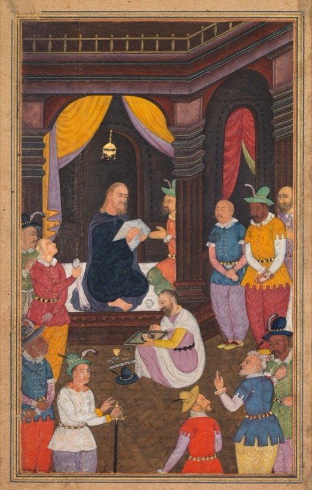
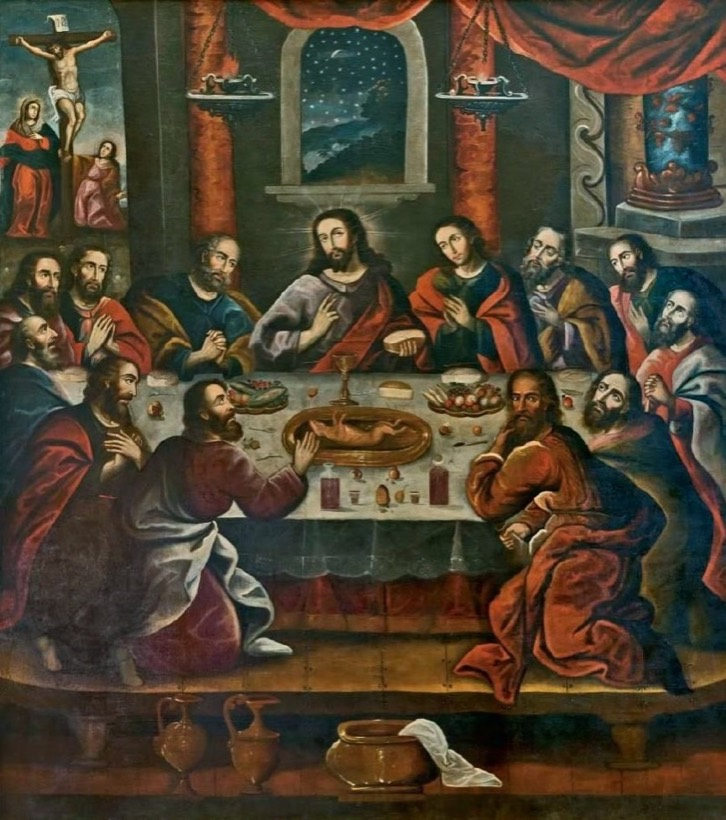

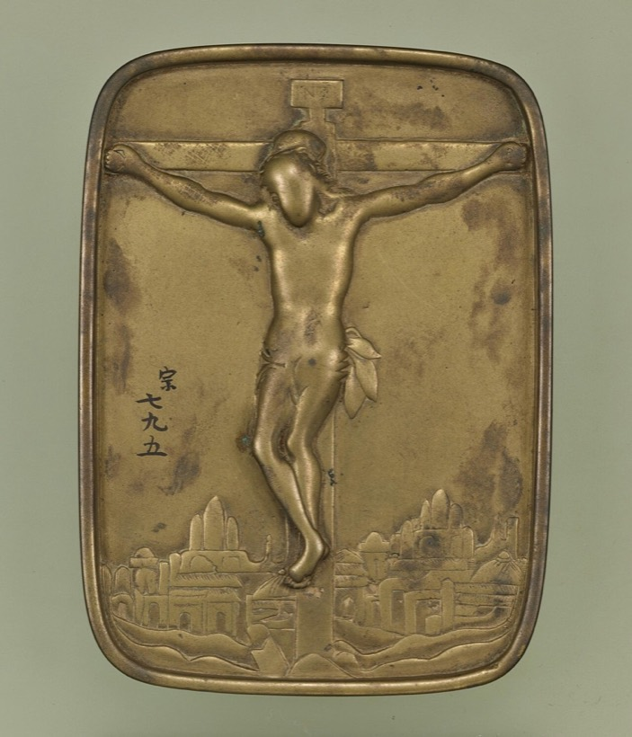

Un artesà del Congo, un pintor mogol, un plomaire nahua o un pintor de Cusco van fer el mateix que Leonardo o que Sallman: representar-lo amb els trets, la roba i fins i tot el menjar de la seva gent. Els teòlegs en diuen inculturació. Jesús no té una sola cara perquè, des del principi, cada cultura l'ha imaginat a la seva imatge.
El Jesús dels altres
Jesús no és només una figura cristiana. Per als musulmans, uns 2.000 milions de persones, és ʿĪsā ibn Maryam, Jesús fill de Maria, un dels grans profetes. L'Alcorà diu que va néixer d'una verge, que va fer miracles i que és el Masīḥ, el Messies. Però no el considera fill de Déu, i nega que el matessin o el crucifiquessin: «no el van matar ni el van crucificar, sinó que se'ls va fer semblar» (4,157).28,29
Algunes escenes alcoràniques sorprenen un lector cristià. Maria no infanta en un pessebre, sinó recolzada al tronc d'una palmera, i una veu li diu que la sacsegi per menjar dàtils frescos (19,23–25). El nadó parla des del bressol per defensar la seva mare (19,29–30). I de petit modela ocells de fang que es posen a volar (3,49; 5,110). Aquesta última història també és en un evangeli apòcrif cristià del segle II, l'Evangeli de la infància de Tomàs, on el nen Jesús fa dotze pardals d'argila. Quin camí va fer la història fins a l'Aràbia del segle VII encara es discuteix.28,30
Maria és l'única dona que l'Alcorà anomena pel nom, i la sura 19 porta el seu nom. Al Nou Testament, en canvi, la mare de Jesús surt pel nom unes dinou vegades, i l'evangeli de Joan no l'anomena mai: sempre és «la mare de Jesús».28
La relació de la tradició jueva amb ell és més complexa, marcada per segles de persecució cristiana. El Talmud de Babilònia, redactat cap als segles V–VII, conserva un passatge polèmic sobre un tal Yeshu ha-Notsri, «Jesús el Natzarè», executat la vigília de Pasqua, acusat de bruixeria i d'haver desviat Israel. L'historiador Peter Schäfer hi llegeix una paròdia deliberada dels evangelis, possible perquè els rabins de la Babilònia persa vivien amb una llibertat que els jueus de les terres cristianes no tenien.31 Al segle XX, en canvi, estudiosos jueus com Joseph Klausner (1922), Geza Vermes (Jesus the Jew, 1973) i Amy-Jill Levine el van tornar a llegir com el que era: un jueu del seu temps.32
Fora d'aquestes tradicions, la seva figura ha viatjat per camins inesperats. L'any 781, a Chang'an (l'actual Xi'an), capital de la Xina Tang, monjos de l'Església d'Orient, de llengua siríaca, van gravar una estela on Jesús és el «Venerable Lluminós Mishihe» (el Messies) i el seu missatge, una «barca de la compassió», amb paraules del budisme i del taoisme.33 Al Japó dels segles XVII al XIX, quan el cristianisme estava prohibit, els cristians amagats resaven davant d'imatges de la bodhisattva budista Kannon que en secret eren la Mare de Déu.25,34 I a la Xina del segle XIX, un aspirant a funcionari suspès quatre vegades, Hong Xiuquan, va llegir un fullet protestant i va decidir que era el germà petit de Jesús. La revolta que va encapçalar, la dels Taiping (1850–1864), va causar uns 20 milions de morts, segons l'estimació més citada.35
També hi ha llegendes. Al poble de Shingō, al nord del Japó, s'ensenya la «tomba de Crist»: segons la història, el seu germà petit, Isukiri, hauria mort a la creu en lloc seu, i Jesús hauria fugit al Japó, on hauria viscut fins als 106 anys. La llegenda neix el 1935 d'uns documents que els estudiosos consideren una falsificació, i des del 1964 s'hi celebra cada any una «festa de Crist».36 La «vida desconeguda de Jesús» que el rus Nicolas Notovitch va publicar el 1894, a partir d'un suposat manuscrit tibetà del monestir de Hemis (Ladakh), també era un frau: el lama principal de Hemis va negar per escrit que existís.37
Quatre coses que sorprenen
No era cristià
Va néixer, va resar, va pelegrinar al Temple i va morir com un jueu observant. La paraula «cristià» apareix anys després de la seva mort, a Antioquia. I els fariseus, que la tradició va pintar com els seus enemics hipòcrites, eren probablement el grup més proper a ell: hi discutia tant perquè compartien terreny, com en una baralla de família.14
Creia que el món s'acabava
La majoria d'historiadors, des d'Albert Schweitzer fins a E. P. Sanders o Bart Ehrman, el veuen com un profeta que anunciava que Déu estava a punt d'intervenir i canviar-ho tot dins d'aquella mateixa generació: «No passarà aquesta generació sense que tot això hagi succeït» (Mc 13,30). Això explica consells que avui sonen impossibles, com no preocupar-se pel menjar de demà o deixar-ho tot a l'instant.14,38
Tenia germans, i la família el creia boig
Marc dona els noms de quatre germans —Jaume, Josep, Judes i Simó— i esmenta germanes (Mc 6,3). En una altra escena, els seus el van a buscar «perquè deien: Ha perdut el seny!» (Mc 3,21). Pau en diu «el germà del Senyor» (Ga 1,19) i Flavi Josep, «germà de Jesús, l'anomenat Crist». La tradició catòlica els interpreta com a cosins i l'ortodoxa com a fills d'un matrimoni anterior de Josep; la majoria d'historiadors, com a germans.7,14
Roma el va matar per política
La creu no era un càstig religiós jueu, sinó una execució romana per a esclaus i rebels. El rètol ho deia: «El rei dels jueus» (Mc 15,26). Però no era un guerriller: com observa la historiadora Paula Fredriksen, si Pilat l'hagués vist com el cap d'un grup armat, hauria crucificat també els seus seguidors, i en canvi els va deixar lliures.7,14
Un mirall al fons d'un pou
El 1906, el teòleg Albert Schweitzer (que després es faria metge) va repassar les principals vides de Jesús escrites en els segles anteriors i va arribar a una conclusió incòmoda: cada autor l'havia retratat d'acord amb el seu propi caràcter. Tres anys després, el teòleg irlandès George Tyrrell, expulsat dels jesuïtes, ho va dir amb una imatge que s'ha fet famosa:38
«El Crist que veu Harnack, mirant enrere a través de dinou segles de foscor catòlica, és només el reflex d'una cara protestant liberal vista al fons d'un pou profund.»
Els Estats Units del segle XX en són un bon exemple. El 1925, el publicitari Bruce Barton va presentar Jesús com «el fundador dels negocis moderns», i el seu llibre va ser el més venut de no-ficció del país el 1926.39 Després han vingut el Jesús hippie dels anys seixanta i el Jesús guerrer i nacionalista de part de la dreta evangèlica.40 I la imatge d'un Jesús blanc encara pesa: al Regne Unit, el 58 % de la gent diu que sol veure Jesús representat com un home blanc, tot i que la majoria acceptaria un Jesús de l'Orient Mitjà.41
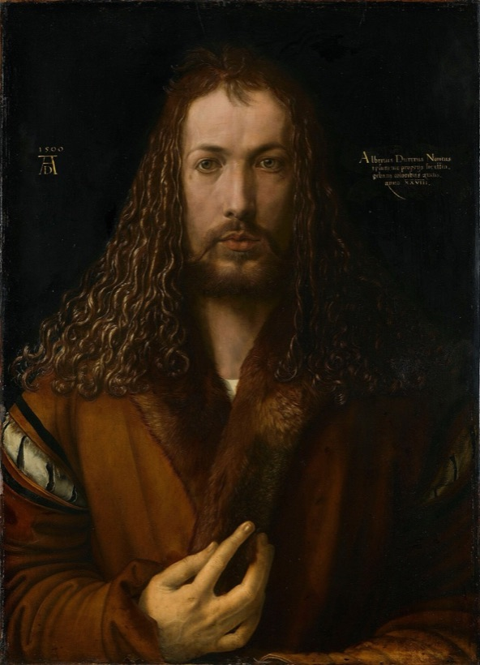
.jpg){kind=link}
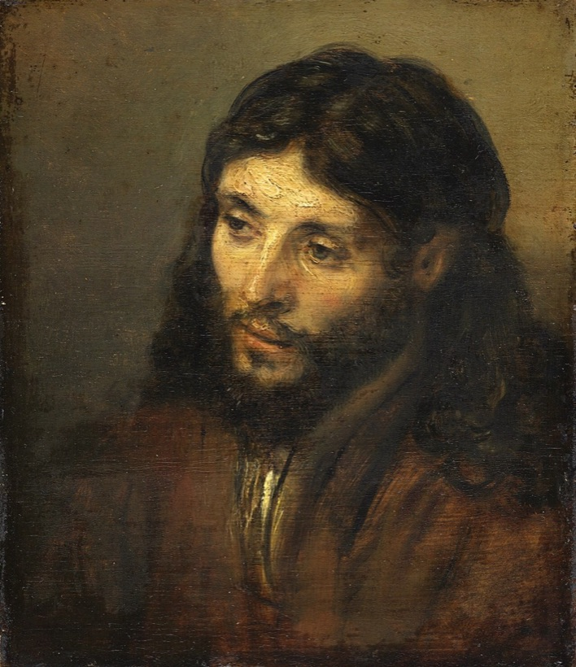

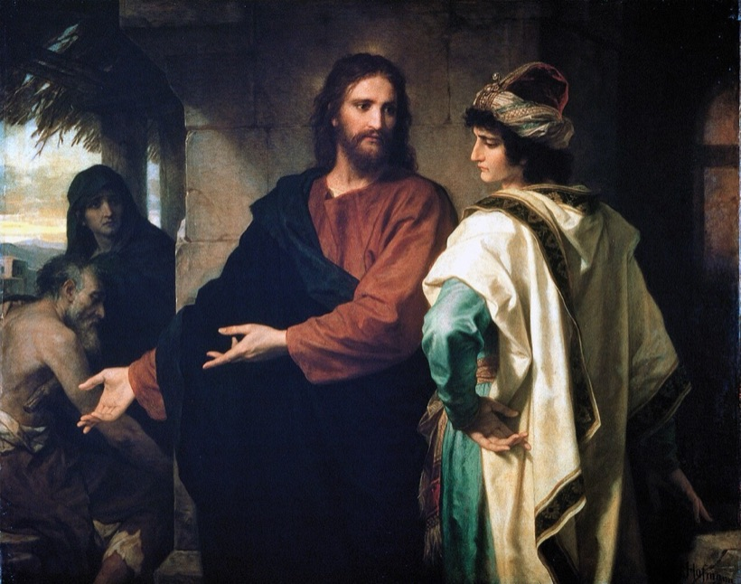

Sobre Head of Christ de Warner Sallman (1940): l'obra continua protegida per drets d'autor (Warner Press; domini públic el 2036 als EUA i el 2039 a Europa) i per això no la reproduïm aquí; es pot veure en línia a la Col·lecció Warner Sallman d'Anderson University.
Treure-li les capes
El quadre de Sallman diu molt dels Estats Units del 1940 i molt poc de la Galilea del segle I. Passa el mateix amb el Crist emperador de Bizanci, el Jesús pàl·lid del Renaixement o el Jesús «ari» d'Eisenach. Res d'això no fa menys legítim que a Etiòpia, al Congo, a Cusco o a Corea l'hagin pintat amb els trets de la seva gent. El problema apareix quan confonem el mirall amb una fotografia.
Quan li treus les capes queda un home concret: un jueu d'estatura mitjana per al seu temps que la seva mare cridava Yēšūaʿ, que parlava arameu en un poble de pedra de Galilea, duia serrells al mantell i creia que el món estava a punt de capgirar-se, i que va morir en una creu romana cap a l'any 30, quan ja tenia uns trenta-cinc anys —sense saber que dos mil anys més tard mig planeta encara discutiria quina cara tenia.
Paraules clau
- Yēšūaʿ
- El nom real de Jesús en hebreu i arameu, forma curta de Yehōšūaʿ (Josuè). D'aquí ve el grec Iēsoûs, el llatí Iesus i el català Jesús.
- Crist
- De Christós, traducció grega de l'hebreu mašīaḥ, «ungit» o Messies. Un títol, no un cognom.
- Anno Domini
- «Any del Senyor»: el compte dels anys des del naixement de Jesús que va proposar Dionís l'Exigu el 525. Té un error d'uns quants anys i no té any zero.
- ʿĪsā
- El nom de Jesús a l'Alcorà. Per a l'islam és profeta i Messies, però no fill de Déu.
- Téktōn
- Paraula grega (Mc 6,3) que traduïm per «fuster»: un artesà de la fusta, la pedra i la construcció.
- Tzitzit
- Serrells rituals que la llei jueva mana portar a les quatre puntes del mantell. Els evangelis indiquen que Jesús en duia.
- Pantocràtor
- «Totpoderós» en grec: el Crist frontal, barbut i sovint entronitzat de l'art bizantí i romànic, com el de Taüll.
- Fumi-e
- «Imatge per trepitjar»: plaques amb Crist o la Mare de Déu que el Japó dels segles XVII–XIX obligava a trepitjar per demostrar que no eres cristià.
- Inculturació
- Quan una cultura adapta una figura religiosa als seus trets, la seva roba i el seu art, com el Crist de llautó del Congo o el Sant Sopar de Cusco.
- Apocalipticisme
- Corrent del judaisme antic que esperava una intervenció imminent de Déu per acabar amb el mal i començar un món nou.
Dades i fonts
Metodologia
Aquest article fa servir només dades reals verificades. Les alçades provenen d'estudis osteològics publicats d'esquelets jueus del segle I. Les dates de la cronologia, de Britannica, de Flavi Josep i de la Pedra de Pilat; la data de la mort (30 o 33 dC) es presenta com el que és, un debat. Els recomptes de noms de l'Alcorà s'han fet sobre el text àrab complet (Quran.com) i coincideixen amb la bibliografia; el de Maria al Nou Testament compta només les mencions de la mare de Jesús pel seu nom. El catàleg de 29 obres del mapa es basa en catàlegs de museus i monografies d'història de l'art; algunes dates d'obres (per exemple, el Sant Sopar de Cusco, c. 1748–1753) tenen un marge. Les enquestes provenen de YouGov (2020–2021) i de l'estudi revisat per experts de Jackson, Hester & Gray (2018). Quan una qüestió es debat (la data de la mort, l'origen del 25 de desembre, l'ossari de Caifàs, el sentit del Talmud), el text ho diu.
Els gràfics
- ↑ De Yēšūaʿ a Jesús: dos mil anys de canvisFormes reals verificades. Etimologia: Britannica («Joshua», «J») i Jewish Encyclopedia (1906). Formes actuals: Mateu 1,21 en edicions publicades de la Bíblia en cada llengua; ʿĪsā, Alcorà 3,45; Yeshu, Talmud de Babilònia, Sanhedrín 43a.3
- ↑ L'any 1 arriba massa tardDades reals. Dates de regnat i de càrrec segons Britannica, Flavi Josep i la Pedra de Pilat. Naixement c. 6–4 aC i mort probable el 30 dC (Britannica); el 33 dC el proposen Humphreys & Waddington (Nature, 1983) a partir del calendari jueu i d'un eclipsi de lluna.3,9,10
- ↑ Per què 1,88 metres es deia «Goliat»Dades reals. Mesures publicades d'esquelets jueus del període del Segon Temple: Nagar & Torge (2003, IEJ 53); Haas (1970) i Zias & Sekeles (1985, IEJ 35); Hachlili (1979) i Hachlili & Smith (1979, BASOR 235). Trets físics segons Joan E. Taylor (2018).21,22
- ↑ Mil cares per a un home sense retratDades reals. Catàleg de 29 obres i fites datades (200–2001) a partir de catàlegs de museus i monografies d'història de l'art, sobre mapa Equal Earth (Natural Earth 110m). Passa el cursor o toca qualsevol punt.
- ↑ L'Alcorà anomena la mare de Jesús més vegades que el Nou TestamentDades reals. Recompte sobre el text àrab complet de l'Alcorà (6.236 versets, Quran.com) i sobre el Nou Testament (mencions de Maria, la mare de Jesús, pel nom, comptades verset a verset). Coincideix amb Smith & Haddad (The Muslim World, 1989).28,29
- ↑ El Jesús que veiem i el Jesús que acceptemDades reals. YouGov UK (desembre 2021, n = 1.714 adults + 1.023 persones de minories ètniques) i YouGov USA (desembre 2020, n = 1.067). Força estadística (valor t) de Jackson, Hester & Gray, PLOS ONE 13(6): e0198745 (2018; n = 511 + 1.200 avaluadors).41,42
Fonts
Cada número del text porta a la seva font. La fletxa (↑) et torna al punt on llegies.
- ↑ Morgan, David (ed.). Icons of American Protestantism: The Art of Warner Sallman. Yale University Press, 1996 (ISBN 978-0-300-06342-4); Morgan, David. Visual Piety. University of California Press, 1998 (ISBN 978-0-520-21932-8). Col·lecció Warner Sallman: Anderson UniversityHi recolza: Warner Sallman, Head of Christ (1940, basat en un carbó del 1924), repartit en còpies de butxaca als soldats nord-americans per la YMCA i l'Exèrcit de Salvació; més de 500 milions d'impressions documentades per David Morgan.
- ↑ Blum, Edward J. i Harvey, Paul. The Color of Christ: The Son of God and the Saga of Race in America. University of North Carolina Press, 2012 (ISBN 978-0-8078-3572-2; ressenya AHR DOI: 10.1093/ahr/118.5.1541).Hi recolza: Warner Sallman, Head of Christ (1940, basat en un carbó del 1924), repartit en còpies de butxaca als soldats nord-americans per la YMCA i l'Exèrcit de Salvació; més de 500 milions d'impressions documentades per David Morgan; Jesus of Nazareth (sèrie de l'ITC i la RAI, 1977; l'anècdota de Zeffirelli només consta en fonts secundàries) i Kim Ki-chang (Vida de Jesús en hanbok, 1952–1953).
- ↑ Encyclopaedia Britannica: «Joshua», «J (letter)» i «Jesus». Jewish Encyclopedia (1906), «Joshua (Jehoshua)». Treccani, «Trissino, Gian Giorgio». Graduate Theological Union Library, «The King James Bible» (Nou Testament del 1612).Hi recolza: Iēsoûs com a traducció de Yeshuaʿ, forma curta de Yehoshuaʿ (Josuè), i la Septuaginta, que ja escriu Josuè Ἰησοῦς. La lectura «Jahvè salva» és la tradicional (Mt 1,21); la Jewish Encyclopedia en proposa una altra; Britannica, «Jesus»: Christ was not originally a name but a title. Suetoni, Claudi 25,4: «Iudaeos impulsore Chresto assidue tumultuantis Roma expulit»; l'editor de l'edició Loeb hi veu un error per Christus, però el debat continua obert; Mort d'Herodes el març o l'abril del 4 aC i naixement de Jesús cap al 6–4 aC (Britannica); eclipsi de lluna a Flavi Josep, Antiguitats XVII, 6,4. Una minoria d'estudiosos situa la mort d'Herodes l'1 aC.
- ↑ Ilan, Tal. Lexicon of Jewish Names in Late Antiquity, Part I: Palestine 330 BCE–200 CE. Mohr Siebeck, 2002 (ISBN 978-3-16-147646-4). Bauckham, Richard. Jesus and the Eyewitnesses. 2a ed., Eerdmans, 2017 (ISBN 978-0-8028-7431-3; Eerdmans). van de Weghe, Luuk. «Name Recall in the Synoptic Gospels», New Testament Studies 69.1 (2023), DOI: 10.1017/S0028688522000170. Gregor, Kamil i Blais, Brian S. «Is Name Popularity a Good Test of Historicity?», JSHJ 21.3 (2023): 171–202, DOI: 10.1163/17455197-bja10023.Hi recolza: Freqüència dels noms jueus a la Palestina del 330 aC – 200 dC: Tal Ilan (2002) i Richard Bauckham (2006/2017).
- ↑ Suetoni, Vida de Claudi 25,4, text llatí i traducció de J. C. Rolfe (LacusCurtius, Univ. de Chicago). Liddell–Scott–Jones, «χρηστός» (Perseus).Hi recolza: Britannica, «Jesus»: Christ was not originally a name but a title. Suetoni, Claudi 25,4: «Iudaeos impulsore Chresto assidue tumultuantis Roma expulit»; l'editor de l'edició Loeb hi veu un error per Christus, però el debat continua obert.
- ↑ Encyclopaedia Britannica, «Aramaic language». Buth, Randall i Notley, R. Steven (eds.). The Language Environment of First Century Judaea. Brill, 2014, DOI: 10.1163/9789004264410.Hi recolza: L'arameu, llengua de Jesús i dels apòstols (Britannica). Sobre el paper de l'hebreu i el grec, que es debat: Buth & Notley (2014).
- ↑ Associació Bíblica de Catalunya, Bíblia catalana. Traducció interconfessional (BCI) (bci.cat/biblia). Flavi Josep, Antiguitats jueves XX, 200 (Univ. de Chicago). Tàcit, Annals XV, 44 (LacusCurtius).Hi recolza: Paraules arameues a Marc: Mc 3,17, Mc 5,41, Mc 7,34, Mc 14,36 i Mc 15,34 (BCI); Mc 3,21, Mc 6,3, Ga 1,19 (BCI) i Flavi Josep, Antiguitats XX, 200. Lectures catòlica (sant Jeroni, cosins) i ortodoxa (Protoevangeli de Jaume, germanastres); Mc 15,26 (BCI), Tàcit, Annals XV, 44, i l'argument de Paula Fredriksen (1999) sobre els deixebles que no van ser detinguts.
- ↑ Encyclopaedia Britannica: «Dionysius Exiguus», «St. Bede the Venerable» i «Common Era».Hi recolza: Dionís l'Exigu (525), que va continuar les taules pasquals de Ciril d'Alexandria (comptades en anys de Dioclecià) i va preferir comptar ab incarnatione, i el seu error de càlcul; difusió per Beda (De temporum ratione, 725; Historia ecclesiastica, 731); absència de l'any zero.
- ↑ Encyclopaedia Britannica: «Herod», «Pontius Pilate». Flavi Josep, Antiguitats jueves XVII, 6,4 (eclipsi), trad. W. Whiston (Perseus).Hi recolza: Mort d'Herodes el març o l'abril del 4 aC i naixement de Jesús cap al 6–4 aC (Britannica); eclipsi de lluna a Flavi Josep, Antiguitats XVII, 6,4. Una minoria d'estudiosos situa la mort d'Herodes l'1 aC.
- ↑ Humphreys, Colin J. i Waddington, W. Graeme. «Dating the Crucifixion», Nature 306 (1983): 743–746, DOI: 10.1038/306743a0.Hi recolza: Pilat, prefecte del 26 al 36 dC; crucifixió «entre el 29 i el 33 dC, possiblement el 30» (Britannica); el divendres 3 d'abril del 33 segons Humphreys & Waddington (1983).
- ↑ Cronògraf de 354: Depositio martyrum i calendari de Filòcal, ed. Th. Mommsen (part 12, part 6). McGowan, Andrew. «How December 25 Became Christmas», Bible Review (2002). Encyclopaedia Britannica, «Christmas».Hi recolza: Primera atestació del 25 de desembre a la Depositio martyrum del Cronògraf de 354 (llista probablement redactada cap al 336) i N·INVICTI·CM·XXX al calendari de Filòcal del mateix còdex. Un passatge d'Hipòlit (c. 204) ja dona la data, però la seva autenticitat es discuteix. Teories del Sol Invicte i del càlcul, i dates armènia i juliana: McGowan (2002) i Britannica.
- ↑ Enciclopèdia Catalana: «era hispànica» i Catalunya Romànica, «Els arquebisbes de Tarragona fins el 1300». Mundó, Anscari M. «El concili de Tarragona de 1180: dels anys dels reis francs als de l'Encarnació», Analecta Sacra Tarraconensia 67/1 (1994): XXIII–XLIII.Hi recolza: Concili provincial de Tarragona del 1180, sota l'arquebisbe Berenguer de Vilademuls; abans ja hi convivien les dues datacions, amb predomini dels anys dels reis francs, i era hispànica (del 38 aC; abolida a Castella el 1383 i a Portugal el 1422).
- ↑ Ehrman, Bart D. Did Jesus Exist? The Historical Argument for Jesus of Nazareth. HarperOne, 2012. Dunn, James D. G. Jesus Remembered. Eerdmans, 2003.Hi recolza: Existència de Jesús, baptisme i crucifixió com a fets gairebé unànimement acceptats: Ehrman (2012), Dunn (2003) i E. P. Sanders (1993).
- ↑ Sanders, E. P. Jesus and Judaism (1985, ISBN 978-0-8006-2061-5) i The Historical Figure of Jesus (Penguin, 1993). Fredriksen, Paula. Jesus of Nazareth, King of the Jews (Knopf, 1999) i When Christians Were Jews (Yale UP, 2018). Levine, Amy-Jill. The Misunderstood Jew (HarperSanFrancisco, 2006). Ehrman, Bart D. Jesus: Apocalyptic Prophet of the New Millennium (Oxford UP, 1999). Meier, John P. A Marginal Jew, vol. 1 (1991). Vermes, Geza. Jesus the Jew (1973).Hi recolza: Existència de Jesús, baptisme i crucifixió com a fets gairebé unànimement acceptats: Ehrman (2012), Dunn (2003) i E. P. Sanders (1993); Jesús anomenat téktōn: Mc 6,3 (BCI). Ofici rural: John P. Meier (1991) i E. P. Sanders (1993); «Cristians» a Antioquia: Ac 11,26 (BCI). Judaisme observant de Jesús i proximitat als fariseus: E. P. Sanders (1985), Amy-Jill Levine (2006) i Paula Fredriksen (1999); Profeta apocalíptic: Mc 9,1 i Mc 13,30 (BCI); Schweitzer (1906), Sanders (1985), Ehrman (1999) i Fredriksen (1999). Una minoria (John Dominic Crossan) el llegeix com un savi no apocalíptic; Mc 3,21, Mc 6,3, Ga 1,19 (BCI) i Flavi Josep, Antiguitats XX, 200. Lectures catòlica (sant Jeroni, cosins) i ortodoxa (Protoevangeli de Jaume, germanastres); Mc 15,26 (BCI), Tàcit, Annals XV, 44, i l'argument de Paula Fredriksen (1999) sobre els deixebles que no van ser detinguts.
- ↑ Flavi Josep, Antiguitats jueves XVIII, 63–64 i XX, 200, trad. W. Whiston (Perseus). Tàcit, Annals XV, 44 (The Latin Library). Goldberg, G. J. «The Mystery of the Testimonium Flavianum».Hi recolza: Flavi Josep, Antiguitats XX, 200 (Jaume) i XVIII, 63–64 (el Testimonium Flavianum, amb un nucli probablement autèntic i afegits cristians); Tàcit, Annals XV, 44: «Christus Tiberio imperitante per procuratorem Pontium Pilatum supplicio adfectus erat».
- ↑ Israel Museum: «Latin dedicatory inscription mentioning Pontius Pilate» i «Elaborate ossuary of “Joseph son of Caiaphas”». Center for Online Judaic Studies: «Ossuary of the High Priest Caiaphas». Google Arts & Culture / Israel Museum, «Ossuary of “Yehohanan son of Hagkol” with heel bone and nail». Autoritat d'Antiguitats d'Israel, comunicat sobre la sinagoga de Magdala (2009), reproduït a la Jewish Virtual Library. Wachsmann, Shelley. The Excavations of an Ancient Boat in the Sea of Galilee. 'Atiqot 19, 1990. Biblical Archaeology Society, «Verdict: Not Guilty» (ossari de Jaume, 2012).Hi recolza: Pedra de Pilat (Cesarea, 1961), ossari de Caifàs (Jerusalem, 1990; identificació probable però no segura), taló de Yehohanan (Giv'at ha-Mivtar, 1968; altres casos: un de possible a Gavello, Itàlia, publicat el 2018, i un a Fenstanton, Anglaterra, amb el clau al taló, datat entre el 130 i el 360 dC i publicat el 2021), sinagoga de Magdala (2009; IAA: 50 aC – 100 dC), barca de Galilea (1986) i judici de l'ossari de Jaume (2012); Yehohanan: alçada estimada per Haas (1970) i reavaluació de Zias & Sekeles (1985).
- ↑ Damon, P. E. et al. «Radiocarbon dating of the Shroud of Turin», Nature 337 (1989): 611–615, DOI: 10.1038/337611a0.Hi recolza: Datació de la Síndone per tres laboratoris (Arizona, Oxford i Zuric): 1260–1390 dC amb un 95 % de confiança.
- ↑ Reed, Jonathan L. Archaeology and the Galilean Jesus. Trinity Press, 2000 (ISBN 978-1-56338-324-3). Dark, Ken. Roman-Period and Byzantine Nazareth and its Hinterland. Routledge, 2020 (Routledge).Hi recolza: Població estimada de Natzaret (Reed 2000: 200–400; Dark 2020: 400–1.000) i cases del segle I: Dark (2012) i excavació de Yardenna Alexandre per a l'IAA (2009).
- ↑ Dark, Ken. «Early Roman-period Nazareth and the Sisters of Nazareth Convent», The Antiquaries Journal 92 (2012): 37–64, DOI: 10.1017/S0003581512001308. Autoritat d'Antiguitats d'Israel, «Remains of a building from the time of Jesus» (Natzaret, 2009).Hi recolza: Població estimada de Natzaret (Reed 2000: 200–400; Dark 2020: 400–1.000) i cases del segle I: Dark (2012) i excavació de Yardenna Alexandre per a l'IAA (2009).
- ↑ Harris, William V. Ancient Literacy. Harvard University Press, 1989 (HUP). Hezser, Catherine. Jewish Literacy in Roman Palestine. Mohr Siebeck, 2001 (Mohr Siebeck). Keith, Chris. Jesus' Literacy. T&T Clark, 2011 (ISBN 978-0-567-11972-8).Hi recolza: Alfabetització: Meir Bar-Ilan (1992, menys d'un 3 %), amb qui coincideix Catherine Hezser (2001); William V. Harris (1989, ~10 % a l'Imperi romà).
- ↑ Taylor, Joan E. What Did Jesus Look Like? Bloomsbury T&T Clark, 2018 (ISBN 978-0-567-67150-9; DOI: 10.5040/9780567671523).Hi recolza: Absència de descripció física als evangelis (Mc 14,44, BCI), pell, cabells, roba i complexió: Joan E. Taylor (2018); Alçada mitjana jueva del segle I (homes 166 cm, dones 147 cm): Nagar & Torge (2003), corroborada per Arensburg & Rak (1975); Pau sobre els cabells: 1Co 11,14 (BCI); anàlisi de Taylor (2018); «La borla del seu mantell» (kráspedon = tzitzit): Mc 6,56 (BCI), prescrit a Nm 15,38–39; Seda de Dunhuang (s. IX, British Museum, identificació debatuda), Pantocràtor de Taüll (c. 1123, MNAC), evangelis etíops il·lustrats i Carta de Lèntul (s. XIII–XIV, impresa el 1474); Reconstrucció forense de Richard Neave per a Son of God (BBC, 2001): un tipus d'home jueu del segle I, no un retrat; valoració crítica de Joan E. Taylor (2018).
- ↑ Nagar, Yossi i Torge, Hagit. «Biological Characteristics of Jewish Burial in the Hellenistic and Early Roman Periods», Israel Exploration Journal 53 (2003): 164–171. Haas, Nicu. «Anthropological Observations on the Skeletal Remains from Giv'at ha-Mivtar», IEJ 20 (1970): 38–59; Zias, Joe i Sekeles, Eliezer. «The Crucified Man from Giv'at ha-Mivtar: A Reappraisal», IEJ 35.1 (1985): 22–27; resum a Biblical Archaeologist 48.3 (1985): 190–191, DOI: 10.2307/3209939. Hachlili, Rachel. «The Goliath Family in Jericho: Funerary Inscriptions», BASOR 235 (1979): 31–66, DOI: 10.2307/1356554; Hachlili, Rachel i Smith, Patricia. «The Genealogy of the Goliath Family», BASOR 235 (1979): 67–70, DOI: 10.2307/1356555. Arensburg, Baruch i Rak, Yoel. «Skeletal Remains of an Ancient Jewish Population from French Hill, Jerusalem», BASOR 219 (1975): 69–71, DOI: 10.2307/1356441.Hi recolza: Alçada mitjana jueva del segle I (homes 166 cm, dones 147 cm): Nagar & Torge (2003), corroborada per Arensburg & Rak (1975); Yehohanan: alçada estimada per Haas (1970) i reavaluació de Zias & Sekeles (1985); Necròpolis de Jericó (mitjana masculina ~169 cm) i ossari de Yeho'ezer «Goliat» (~188,5 cm): Hachlili (1979) i Hachlili & Smith (1979).
- ↑ Parco archeologico del Colosseo, «Scratched graffito with blasphemous crucifix».Hi recolza: Grafit d'Alexàmenos, Palatí (Roma), c. 200: ΑΛΕΞΑΜΕΝΟΣ ΣΕΒΕΤΕ ΘΕΟΝ, «Alexàmenos venera [el seu] déu» (Solin & Itkonen-Kaila 1966, núm. 246). Una gemma màgica del British Museum (1986,0501.1, s. II–III) és una altra de les representacions més antigues de la crucifixió.
- ↑ Jensen, Robin Margaret. Face to Face: Portraits of the Divine in Early Christianity. Fortress Press, 2005 (ISBN 978-0-8006-3678-4). DeWitt, Lloyd (ed.). Rembrandt and the Face of Jesus. Yale UP, 2011 (ISBN 978-0-300-16957-7). Catàlegs verificats: Yale (Dura-Europos) · British Museum (Hinton St Mary) · Dumbarton Oaks (Justinià II) · British Museum (Dunhuang) · MNAC (Taüll) · Morgan Library (Zir Ganela) · Alte Pinakothek (Dürer) · Gemäldegalerie Berlin (Rembrandt).Hi recolza: Grafit d'Alexàmenos, Palatí (Roma), c. 200: ΑΛΕΞΑΜΕΝΟΣ ΣΕΒΕΤΕ ΘΕΟΝ, «Alexàmenos venera [el seu] déu» (Solin & Itkonen-Kaila 1966, núm. 246). Una gemma màgica del British Museum (1986,0501.1, s. II–III) és una altra de les representacions més antigues de la crucifixió; Dura-Europos (c. 232, Yale 1932.1202), catacumbes de Priscil·la i Cal·lixt, mosaic de Hinton St Mary (British Museum; la identificació amb Crist és la més acceptada, però es discuteix) i sarcòfag de Juni Bas (359): Robin M. Jensen (2005); Commodil·la, Santa Pudenziana (c. 401–417), Sant'Apollinare Nuovo (c. 500–526), Pantocràtor del Sinaí (s. VI) i solidus de Justinià II (692–695); Seda de Dunhuang (s. IX, British Museum, identificació debatuda), Pantocràtor de Taüll (c. 1123, MNAC), evangelis etíops il·lustrats i Carta de Lèntul (s. XIII–XIV, impresa el 1474); Rembrandt, Cap de Crist (c. 1648, Gemäldegalerie Berlin); l'inventari del 1656 registra diversos caps de Crist, entre ells «een Christus tronie nae't leven». DeWitt (ed.), Rembrandt and the Face of Jesus (2011); Jesus of Nazareth (sèrie de l'ITC i la RAI, 1977; l'anècdota de Zeffirelli només consta en fonts secundàries) i Kim Ki-chang (Vida de Jesús en hanbok, 1952–1953).
- ↑ The Metropolitan Museum of Art, «Crucifix» (1999.295.7). The Cleveland Museum of Art, «Jesus being portrayed by King Abgar's painter» (2005.145.143.a). Smarthistory, «The Mass of St. Gregory». Agència de Turisme del Japó, «Chronology of Christianity in Japan Centered on Nagasaki» i «Artifacts Related to Hidden Christians».Hi recolza: Mosaic de plomes de la Missa de sant Gregori (Mèxic, 1539), crucifix del Congo (Met), miniatura mogol del Mir'at al-quds (1602–1604), Sant Sopar de Cusco atribuït a Marcos Zapata (c. 1753) i fumi-e (introduïts cap al 1628–1629, abolits el 1858); Prohibició del cristianisme (1614–1873), cristians amagats (Kakure Kirishitan) i la Mare de Déu disfressada de Kannon.
- ↑ Heschel, Susannah. The Aryan Jesus: Christian Theologians and the Bible in Nazi Germany. Princeton University Press, 2008 (ISBN 978-0-691-12531-2).Hi recolza: Institut d'Eisenach (fundat el 6 de maig de 1939 per Walter Grundmann) i antecedents del segle XIX (Renan, 1863; Chamberlain, 1899): Susannah Heschel (2008).
- ↑ BBC News. «Why do we think Christ was white?» (reconstrucció de Richard Neave per a Son of God), 27 de març de 2001. BBC NewsHi recolza: Reconstrucció forense de Richard Neave per a Son of God (BBC, 2001): un tipus d'home jueu del segle I, no un retrat; valoració crítica de Joan E. Taylor (2018).
- ↑ Alcorà, text àrab i traducció Sahih International (Quran.com; recompte sobre el text complet de l'API de Quran.com). Smith, Jane I. i Haddad, Yvonne Y. «The Virgin Mary in Islamic Tradition and Commentary», The Muslim World 79.3–4 (1989): 161–187.Hi recolza: Alcorà 3,45 (al-Masīḥ ʿĪsā ibn Maryam), 3,47 i 19,20 (naixement virginal), 4,157–158 (crucifixió; traducció pròpia de wa-lākin shubbiha lahum), 4,171 i 19,35 (no és fill de Déu). Recompte: ʿĪsā 25 vegades, Maryam 34, Muhammad 4. Musulmans al món el 2020: Pew Research Center (2025); Alcorà 19,23–25 (la palmera), 19,29–30 (el bressol), 3,49 i 5,110 (els ocells d'argila). Evangeli de la infància de Tomàs, cap. II (dotze pardals), datat probablement a mitjan segle II; Maria és l'única dona anomenada a l'Alcorà (Smith & Haddad, 1989). Mencions de la mare de Jesús pel nom al Nou Testament: Mateu 5, Marc 1, Lluc 12, Fets 1; Joan, cap. Comptant totes les Maries (Magdalena, la de Betània, etc.), el Nou Testament escriu el nom unes 54 vegades.
- ↑ Pew Research Center. «How the Global Religious Landscape Changed From 2010 to 2020», 9 de juny de 2025.Hi recolza: Alcorà 3,45 (al-Masīḥ ʿĪsā ibn Maryam), 3,47 i 19,20 (naixement virginal), 4,157–158 (crucifixió; traducció pròpia de wa-lākin shubbiha lahum), 4,171 i 19,35 (no és fill de Déu). Recompte: ʿĪsā 25 vegades, Maryam 34, Muhammad 4. Musulmans al món el 2020: Pew Research Center (2025).
- ↑ Encyclopaedia Britannica, «Infancy Gospel of Thomas». James, M. R. The Apocryphal New Testament. Oxford, 1924 (Evangeli de la infància de Tomàs, cap. II).Hi recolza: Alcorà 19,23–25 (la palmera), 19,29–30 (el bressol), 3,49 i 5,110 (els ocells d'argila). Evangeli de la infància de Tomàs, cap. II (dotze pardals), datat probablement a mitjan segle II.
- ↑ Talmud de Babilònia, Sanhedrín 43a, edició William Davidson (Sefaria). Schäfer, Peter. Jesus in the Talmud. Princeton University Press, 2007.Hi recolza: Talmud de Babilònia, Sanhedrín 43a («la vigília de Pasqua van penjar Jesús el Natzarè», acusat de bruixeria i d'incitar Israel); lectura de Peter Schäfer (2007), segons qui la polèmica només era possible en la relativa llibertat de la Babilònia persa. Si aquest Yeshu és el Jesús històric es discuteix.
- ↑ University of Edinburgh, «Joseph Klausner's Jesus of Nazareth (1922)». Vermes, Geza. Jesus the Jew. Collins, 1973. Levine, Amy-Jill. The Misunderstood Jew. HarperSanFrancisco, 2006.Hi recolza: Joseph Klausner, Yeshu ha-Notsri (1922); Geza Vermes (1973); Amy-Jill Levine (2006).
- ↑ Estela de Xi'an (781), Museu del Bosc d'Esteles de Xi'an; text xinès i estudi a l'Encyclopaedia Iranica, «Christianity v».Hi recolza: Estela de Xi'an (781), de l'Església d'Orient (Jingjiao, «religió lluminosa»); segons el text, el primer missioner, Aluoben, venia de Daqin, el món romà i siríac.
- ↑ Encyclopaedia Britannica, «Kirishitan».Hi recolza: Prohibició del cristianisme (1614–1873), cristians amagats (Kakure Kirishitan) i la Mare de Déu disfressada de Kannon.
- ↑ Encyclopaedia Britannica, «Hong Xiuquan» i «Taiping Rebellion». Columbia University, Asia for Educators, «The Taiping Rebellion». Platt, Stephen R. Autumn in the Heavenly Kingdom. Knopf, 2012.Hi recolza: Hong Xiuquan (1814–1864), el fullet de Liang Fa i el Regne Celestial dels Taiping; uns 20 milions de morts segons Britannica i Columbia University (altres estimacions són més altes).
- ↑ Okamoto Ryōsuke, «キリストの墓» (La tomba de Crist), nippon.com, 2019.Hi recolza: La «tomba de Crist» de Shingō (Aomori) i els documents Takenouchi, considerats un fals; festa de Crist des del 1964.
- ↑ Müller, F. Max. «The Alleged Sojourn of Christ in India», The Nineteenth Century (1894); Douglas, J. Archibald. «The Chief Lama of Himis on the Alleged “Unknown Life of Christ”», The Nineteenth Century (1896) (tertullian.org).Hi recolza: Nicolas Notovitch, La vie inconnue de Jésus-Christ (1894), desmuntada per Max Müller (1894) i J. Archibald Douglas (1896).
- ↑ Schweitzer, Albert. Von Reimarus zu Wrede (1906; Archive.org) / The Quest of the Historical Jesus (1910, p. 4; Archive.org). Tyrrell, George. Christianity at the Cross-Roads (Longmans, Green & Co., 1909, p. 44; Archive.org).Hi recolza: Profeta apocalíptic: Mc 9,1 i Mc 13,30 (BCI); Schweitzer (1906), Sanders (1985), Ehrman (1999) i Fredriksen (1999). Una minoria (John Dominic Crossan) el llegeix com un savi no apocalíptic; Albert Schweitzer es va llicenciar en medicina el 1913. George Tyrrell va ser expulsat de la Companyia de Jesús el 1906; el llibre és pòstum. Albert Schweitzer, Von Reimarus zu Wrede (1906); George Tyrrell, Christianity at the Cross-Roads (1909), p. 44.
- ↑ Barton, Bruce. The Man Nobody Knows. Bobbs-Merrill, 1925 (National Humanities Center, extracte PDF).Hi recolza: Bruce Barton, The Man Nobody Knows (1925), número 1 de no-ficció als EUA el 1926 segons Publishers Weekly.
- ↑ Prothero, Stephen. American Jesus (FSG, 2003, ISBN 978-0-374-52956-7). Du Mez, Kristin Kobes. Jesus and John Wayne (Liveright, 2020; W. W. Norton). Crossley, James G. Jesus in an Age of Neoliberalism (Routledge, 2012; Routledge).Hi recolza: El Jesús dels anys seixanta (Prothero, 2003) i el Jesús masculí i nacionalista de part de l'evangelisme blanc nord-americà (Du Mez, 2020); vegeu també Crossley (2012).
- ↑ YouGov UK (Matthew Smith). «What race can Jesus be?», 23 de desembre de 2021 (YouGov UK). YouGov USA (Matthew Smith). «What race can Jesus and Santa be?», 22 de desembre de 2020 (YouGov USA).Hi recolza: YouGov UK (23 de desembre de 2021) i YouGov USA (22 de desembre de 2020).
- ↑ Jackson, Joshua Conrad; Hester, Neil i Gray, Kurt. «The faces of God in America: Revealing religious diversity across people and politics», PLOS ONE 13(6): e0198745 (2018), DOI: 10.1371/journal.pone.0198745. Epley, Nicholas et al. «Believers' estimates of God's beliefs are more egocentric than estimates of other people's beliefs», PNAS 106(51): 21533–21538 (2009), DOI: 10.1073/pnas.0908374106.Hi recolza: Jackson, Hester & Gray, PLOS ONE 13(6): e0198745 (2018).